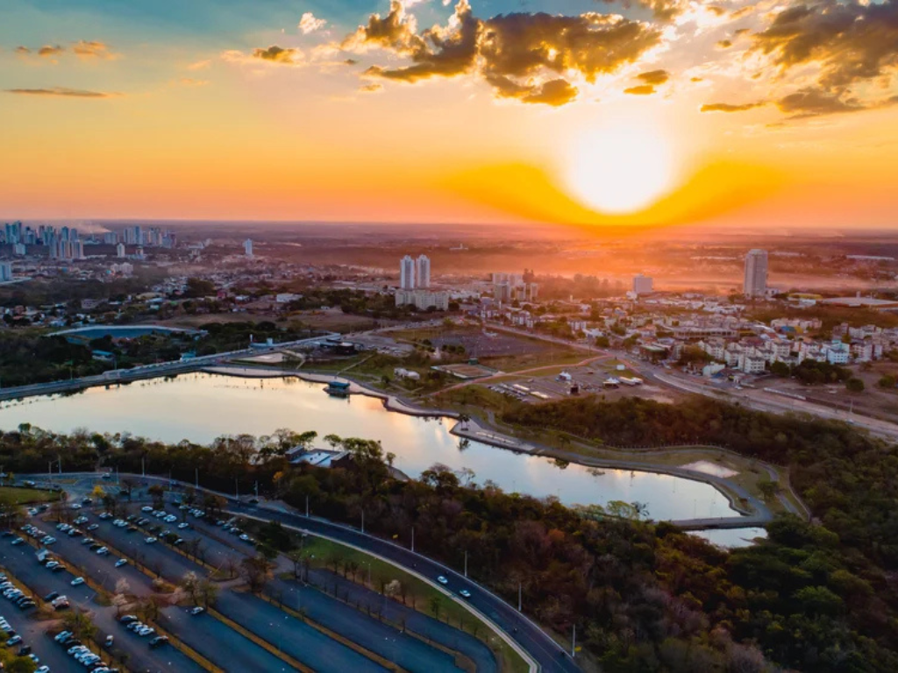

O estado de Mato Grosso (MT), localizado na região Centro-Oeste do Brasil, é um dos maiores do país em extensão territorial e se destaca por sua enorme riqueza natural. Abriga três importantes biomas — Amazônia, Cerrado e Pantanal —, o que lhe confere uma biodiversidade única e paisagens impressionantes. Sua capital, Cuiabá, é um dos principais centros urbanos da região, enquanto cidades como Rondonópolis e Sinop têm grande relevância econômica. Mato Grosso é um dos maiores produtores agrícolas do Brasil, liderando na produção de soja, milho e algodão, além de possuir forte atividade pecuária. Apesar do perfil voltado ao agronegócio, o estado também atrai turistas interessados em ecoturismo, com destaque para o Pantanal, famoso por sua fauna abundante e beleza natural.

Voltar